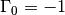

skrf.media.media.Media¶
- class skrf.media.media.Media(frequency, propagation_constant, characteristic_impedance, z0=None)¶
The base-class for all transmission line mediums.
The Media object provides generic methods to produce Network‘s for any transmision line medium, such as line() and delay_short().
The initializer for this class has flexible argument types. This allows for the important attributes of the Media object to be dynamic. For example, if a Media object’s propagation constant is a function of some attribute of that object, say conductor_width, then the propagation constant will change when that attribute changes. See __init__() for details.
The network creation methods build off of each other. For example, the specicial load cases, suc as short() and open() call load() with given arguments for Gamma0, and the delay_ and shunt_ functions call line() and shunt() respectively. This minimizes re-implementation.
Most methods initialize the Network by calling match() to create a ‘blank’ Network, and then fill in the s-matrix.
Attributes
| characteristic_impedance | Characterisitc impedance |
| propagation_constant | Propagation constant |
| z0 | Port Impedance |
Methods
| __init__ | The Media initializer. |
| capacitor | Capacitor |
| delay_load | Delayed load |
| delay_open | Delayed open transmission line |
| delay_short | Delayed Short |
| electrical_length | calculates the electrical length for a given distance, at |
| from_csv | create a Media from numerical values stored in a csv file. |
| guess_length_of_delay_short | Guess physical length of a delay short. |
| impedance_mismatch | Two-port network for an impedance miss-match |
| inductor | Inductor |
| line | Matched transmission line of given length |
| load | Load of given reflection coefficient. |
| match | Perfect matched load ( ). ). |
| open | Open ( ) ) |
| resistor | Resistor |
| short | Short () |
| shunt | Shunts a Network |
| shunt_capacitor | Shunted capacitor |
| shunt_delay_load | Shunted delayed load |
| shunt_delay_open | Shunted delayed open |
| shunt_delay_short | Shunted delayed short |
| shunt_inductor | Shunted inductor |
| splitter | Ideal, lossless n-way splitter. |
| tee | Ideal, lossless tee. |
| theta_2_d | Converts electrical length to physical distance. |
| thru | Matched transmission line of length 0. |
| white_gaussian_polar | Complex zero-mean gaussian white-noise network. |
| write_csv | write this media’s frequency, z0, and gamma to a csv file. |

Previous topic
skrf.media.freespace.Freespace.write_csv
Next topic
skrf.media.media.Media.characteristic_impedance